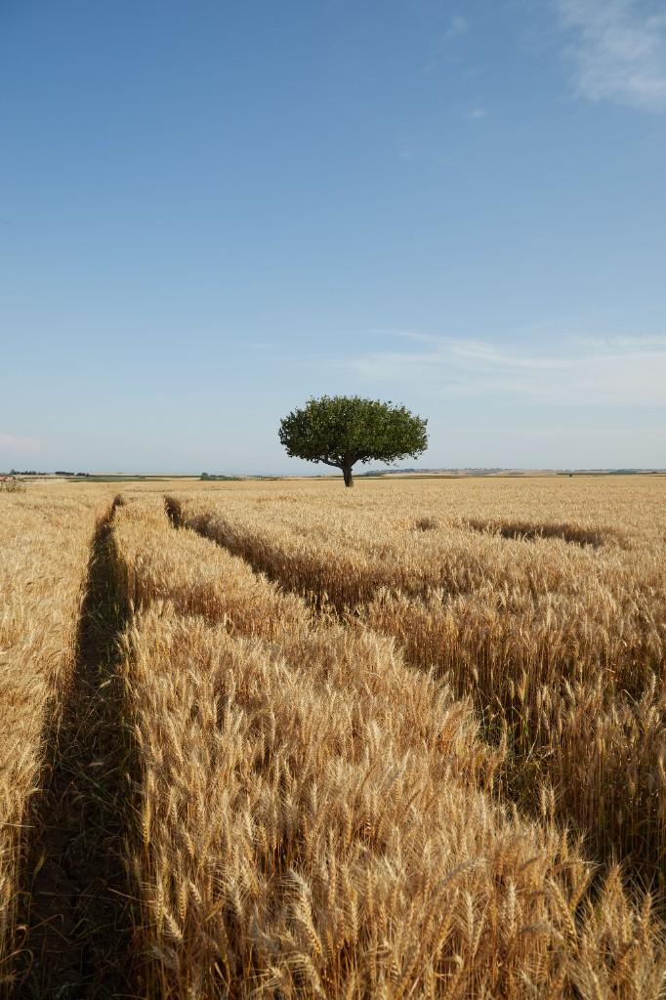

Wheat (Triticum)
First Cultivated: ~9600 BCE
Optimal Climate: Temperate
Water Requirement: 12 to 15 inches annually
Wheat was one of the first crops to be domesticated in the Fertile Crescent. Its ability to self-pollinate greatly facilitated the selection of many distinct domesticated varieties. In the Mediterranean diet, it forms the caloric backbone, primarily consumed as bread, couscous, and pasta.